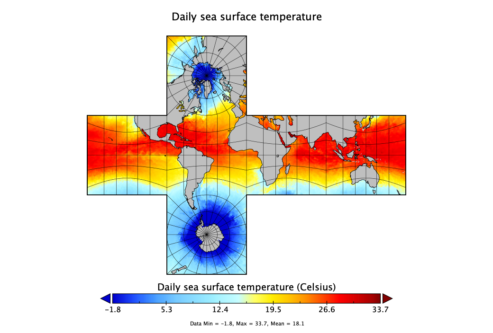

# Load packages -----------------------------------------------------------
library(tidyverse)
library(tidync)
library(data.table) # for the fast fwrite() function
library(heatwaveR)
library(doParallel)
registerDoParallel(cores = 14) # not using all 16
# Define paths ------------------------------------------------------------
datadir <- "/Volumes/OceanData"
oisst_file_dir <- paste0(datadir, "/test_files")
nc_file <- paste0(oisst_file_dir, "/OISST_combined.nc")
MHW_dir <- datadir
# Define various functions ------------------------------------------------
# A load and slice function for the combined netCDF
OISST_load <- function(file_name, lon1, lon2) {
OISST_dat <- tidync(file_name) %>%
hyper_filter(lon = between(lon, lon1, lon2)) %>%
hyper_tibble(select_var = "sst", force = TRUE, drop = TRUE) %>%
select(-zlev) %>%
dplyr::rename(t = time, temp = sst) %>%
mutate(t = as.Date(t, origin = "1978-01-01"))
return(OISST_dat)
rm(OISST_dat)
}
# Rob's MHW detect function
event_only <- function(df) {
# first calculate the climatologies
clim <- ts2clm(data = df, climatologyPeriod = c("1991-01-01", "2020-12-31"))
# then the events
event <- detect_event(data = clim)
rm(clim)
# return only the event metric dataframe of results
return(event$event)
rm(event)
}Downloading and Preparing NOAA OISST Data: python + CDO
Marine heatwaves and cold spells as per Hobday et al (2016) and Schlegel et al (2017).
This vignette demonstrates an alternative method for downloading NOAA OISST data (using a python script) and preparing and detecting marine heatwaves.
1 Overview
In this vignette we shall look at retrieving and processing the Reynolds Optimally Interpolated Sea Surface Temperature (OISST), which is a global data set of Advanced Very High Resolution Radiometer (AVHRR) derived SSTs at a daily resolution, starting on 1 September 1981. The source of the data is the Physical Oceanography Distributed Active Archive Centre (PODAAC).
Several steps are involved:
- Retrieving the data using a python script
- Using CDO to combine the daily files into an über netCDF
- Extracting the giant netCDF using
tidync - Creating longitude slices
- Detecting MHWs in each slice in parallel

Each global, daily file is around 8.3Mb, so they add up to a large amount of data when a time series of at least 30 years duration is downloaded. A time series of at least 30 years is needed for heatwave detection. Currently I have 13,216 of these global files, and this amounts to ~108Gb of total disk space. Since not everyone will need all of these data, we shall subset the data using a python script prior to downloading them.
2 Subsetting using a python script
To do the subsetting and bring the data to your local computer/server, you will need access to python >3.7 with numpy. Make sure it is installed on your system and visible on the system PATH.
<<< — check python version — >>>
Create a folder on your server where all the data will be received, below, for example, I use /Users/ajsmit/spatial/test/netCDF.
Into this directory, copy the python script, subset_dataset.py (link). Remember to make the file executable by running chmod +x subset_dataset.py. I use MacOS X (or linux), so I’m not able to provide instructions if you use Windows. In a terminal, change to the directory that will receive the netCDF files, where the python script now lives. If python is in your system’s path, you should be able to execute the following command on the terminal/command line at the prompt >:
> ./subset_dataset.py -s 19810901 -f 20171014 -b 5 45 -50 -12 -x AVHRR_OI-NCEI-L4-GLOB-v2.0
Encapsulated by the above command are the following parameters:
- long.min = 5
- long.max = 45
- lat.min = -50
- lat.max = -12
- start.date = 1981-09-01 (the OISST dataset starts here)
- end.date = 2022-02-28 (daily, new data are made available)
- short.name = AVHRR_OI-NCEI-L4-GLOB-v2.0
The spatial extent is for a region around southern Africa that has both the Benguela and Agulhas Current in it; we select files starting in 1981-09-01 and going up to 2022-02-28. The short name is the name mentioned on the Reynolds OISST data website—substituting this name for any of the other SST datasets on that website should then permit the retrieval of other data sets (e.g. the MUR data’s short name is MUR-JPL-L4-GLOB-v4.1). This website seems to be down frequently, so try a couple of times if it does not work the first time.
Adjust any of these parameters to taste in order to define the spatial extent and the time period as required by your study.
If everything works according to plan, a bunch of data will now be downloaded. This might take several hours. There will be one netCDF file for each day of the study period. In later steps we shall combine them into one netCDF file, and then do some further processing to extract the marine heatwaves.
3 Combine daily netCDFs into an über netCDF using CDO
The approach taken here sequentially slices the combined über netCDF and then detects marine heatwaves in parallel within each ‘slice.’
To make a giant netCDF, I use the Climate Data Operators (CDO) command in the terminal:
> cdo mergetime *.nc OISST_combined.nc
This can easily be applied to global data from 1 Sept 1981 to present. One can make a function in R to call cdo so as to do everything within an R script. Each new daily file can then be added to the über netCDF as it becomes available.
An advantage of working with this big netCDF is that subsetting and slicing are much easier and faster compared to working with individual files per each longitude slice.
Another advantage of going the combined netCDF route is that the resultant giant file is much smaller than either a db file or a series of RData files (e.g. one file per longitude slice). This is because netCDF has obvious advantages when it comes to storing array data, e.g. ~10 years worth of daily global files result in these file sizes:
- netCDF: 30 Gb, or
- csv and db file: ~97 Gb each
4 Extract SST data using tidync, and parallel process individual ‘slices’
I use tidync::tidync() to sequentially select small slices that fit into memory and process each in parallel using plyr::ldapply(). Someday I’ll replace the plyr function with something newer as this package is sadly no longer maintained. Maybe one of the map() family of functions in the purrr package? The ‘width’ of a slice can be scaled with the amount of memory, and the subsequent parallel processing to detect the events within each slice scales with the number of CPU cores.
5 Apply the slice and detect functions
Here is a set of steps that does the job for me:
# Execute the code --------------------------------------------------------
# Define the slices
# 10° longitude slices seem to work fine on
# my MacBook Pro with 64Gb RAM and 16 cores
slice_df <- tibble(lon1 = seq(0, 350, 10),
lon2 = seq(10, 360, 10))
system.time(
# extract slices sequentially
for (i in 1:nrow(slice_df)) {
cat(noquote(paste("Processing slice", i, "of", nrow(slice_df),
"-->", slice_df$lon1[i], "to", slice_df$lon2[i], "°E\n")))
cat(noquote(" > 1. loading and slicing NetCDF\n"))
sst <- OISST_load(nc_file, lon1 = slice_df$lon1[i], lon2 = slice_df$lon2[i])
# process each slice in parallel
cat(noquote(" > 2. detecting marine heatwaves\n"))
MHW <- plyr::ddply(.data = sst, .variables = c("lon", "lat"),
.fun = event_only, .parallel = TRUE)
rm(sst)
# save results to disk
cat(noquote(" > 3. saving events to csv\n"))
fwrite(MHW, file = paste0(datadir, "/MHW_slice_", i, "_",
slice_df$lon1[i], "-", slice_df$lon2[i], ".csv"))
rm(MHW)
cat(noquote("SLICE DONE!\n"))
cat(sep="\n\n")
}
)Please let me know if there are issues with the scripts, or if you have suggesations about how to improve them.
Reuse
Citation
BibTeX citation:
@online{smit,
author = {Smit, AJ and Smit and Robert W Schlegel, AJ},
title = {Downloading and {Preparing} {NOAA} {OISST} {Data:} Python +
{CDO}},
date = {},
url = {https://tangledbank.netlify.app/vignettes/alt_method.html},
langid = {en}
}
For attribution, please cite this work as:
Smit A, Smit and Robert W Schlegel A Downloading and Preparing NOAA
OISST Data: python + CDO. https://tangledbank.netlify.app/vignettes/alt_method.html.